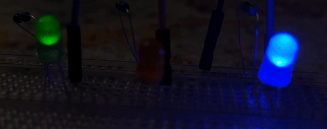

Turning LED on & off with gpio pin
- define pin led is attached to:
#define BLUE 0 - in main, setup gpio as an output:
gpio_init(BLUE); gpio_set_dir(BLUE, true); //output - in while loop, turn on/off led:
gpio_put(BLUE, true); //on gpio_put(BLUE, false); //off
Driving LED with PWM
Set up LED struct & functions:
Create library file here: rcc-pico/dev/pico/include/led_pwm.h
- Have this at top of file:
- Create new struct RGBLED of 3 Servo structs, like Motor
- Create LEDInit() function, like MotorInit()
- Create LEDOn() function, like MotorOn()
- Create LEDPower() function, like MotorPower() hint: use freq around 500 when calling LEDPower()
#include "hardware/pwm.h"
#include "pico/stdlib.h"
#include <math.h>
#include <stdlib.h>
#include "rcc_pins.h"
using namespace std;
Reference: rcc-pico/dev/pico/include/pwm_helper.h
Test function
- Within your .cpp file, include your led driver library:
#include "led_pwm.h"Build State Machine
- Have each led's brightness fade in and out over time
- Add LED's to follow-at-a-distance or target-acquired state machine
- Have LED's get brighter when object is closer to lidar
- Have LED's track angular velocity or encoder readings
- Get creative with it:)


Same timing on 3 LED's and Tricolor:)